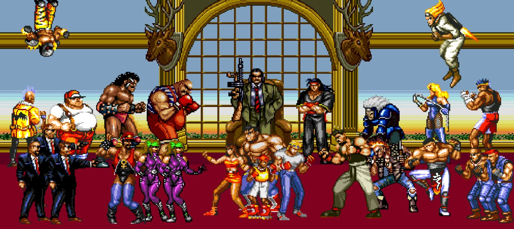

Project Ideas
Image © SEGA
Project Ideas
I have always enjoyed playing video games since I was a child and one of my favourite genres is beat ‘em up’s. Some of my earliest memories are playing Streets of Rage for the Sega Megadrive with my brother, a game where you beat up thugs in order to take down their gang, a simple game by today’s standards, but still very enjoyable. This style is currently still popular in indie games and makes for a very entertaining co-op or single player experience. So, I would like to make a beat ‘em up game to practice and gain skills in game engines, programming and design.
Motivation
One of my favourite games of all time is God Hand for the PlayStation 2. God Hand is a 3d beat ‘em up game with a forgettable story but some of the most entertaining and satisfying fighting mechanics in any game I have ever played. Unfortunately, the game underperformed upon release and a negative review from IGN sealed the coffin. Clover Studios the company that developed the game was dissolved leaving the likelihood of a sequel to be very low. I would love to one day be able to make a game that I find to be a spiritual successor to God Hand, just as good as the original if not better.
Description
For my first attempt at making a game in this genre I would think that a simple 2D side scrolling game for Steam. This would be good practice as well as having a very large potential audience. Due to the fact that I’m not an artist and do not consider myself to be particularly skilled in the field I would have to keep the graphics fairly simple, perhaps opting for a pixel art or intentionally crude style.
The game would initially just be single player and couch co-op and be controlled by two buttons and a directional pad, I would like to add functionality for a second joystick for dodging, strafing and rolling but this would require PC users to have a controller to play the game, perhaps I could have a toggle button on the keyboard such as shift that changes the movement keys to dodging keys and back when you release the button (similar to dodging in the Dark Souls games). If the game proves to be popular an online-multiplayer functionality can be added later. The game would have to have at least 3 playable characters and I would like to make a game with an old west setting inspired by Clint Eastwood and Spaghetti Western movies.
Each level could begin with you dismounting your horse as you reach a new town, fighting enemies and eventually a boss which when beat leads you to progress to the next area. There would have to be branching paths in order to encourage multiple playthroughs.
The story would be something simple and unimportant for example you would be a bounty hunter and as you roll into town you would pull up to a wanted poster sign presenting usually 2 faces in which you can choose deciding what boss you will be fighting at the end of the level and changing the outcome of the game. The overarching story is that you could be on the hunt for the person that wronged you in the past, that also happens to be the leader of all the crooks you’re going town to town taking out. The main characters will be silent so you never really know their motives but there will be some insight given by NPCs in the form of text.
The fighting system will have to be intuitive and responsive, something that I will defiantly have to research in order to accomplish, because I know what a fun beat ‘em up game feels like to play but, do I know how to make one. There would have to be a simple combo system as well as grabs and counters and I would absolutely love to somehow incorporate a God Hand style dodging system.
If I were to release it on steam I would have to initially make a demo for it and concept art to try and source crowdfunding on Kickstarter or a similar platform that way I could hire people to produce high quality art and animations that I could not produce on my own.
Tools and Technologies
For the software I would need to create this game, I would need to use Unity as it is free and one of the most widely used game development engines by studios and beginners alike. I would be using Photoshop to create the art assets as I have a firm understanding of the software. And I would need some sort of music software to create the games initial soundtrack, I have logic pro on my laptop, so I would be using that. I would also need to source some sound effects from the internet or capture them myself. Hardware required would just be my PC and anyone else’s who I send demo versions of the game to for testing.
Skills Required
I would defiantly need to increase my programming knowledge because at this point I have no experience with unity, so if I was to undertake this task I would have to study that software in-depth. I am fine with using Photoshop and am confident I could create basic sprites however, they may not have the best animation. I am perfectly comfortable using Logic to create music. Implementing all of these things into one cohesive project would be quite a difficult task for me to undertake on my own.
Outcome
If the project is successful, then hopefully I will have a pretty cool game that would be fun for people to play either by themselves or with friends. I will gain new skills and I will have a better understanding of if I want to continue with game development and hopefully will be even closer to my goal of making a game like God Hand. This project will improve my skills and shape a path for my future at RMIT.